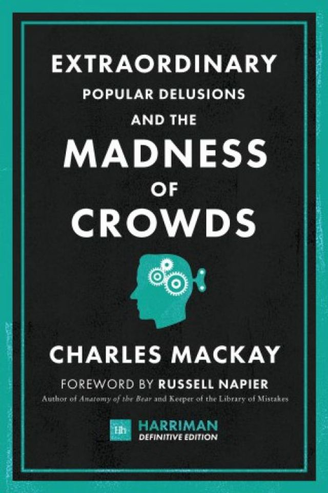

15:51 · 6 OPERE
Beffe e Beffatori in Nome di una Crisi.
Il filo del discorso
Dr Divago legge e commenta la premessa di Beffe e beffatori in nome di una crisi. Dopo la dedica, chiarisce l’intenzione di discutere le forme del potere e il linguaggio dell’emergenza, più che produrre un’analisi statistica. La lettura passa dalla rappresentanza politica alla riduzione del dissenso e torna sulla domanda se sia possibile scrivere mentre gli eventi sono ancora aperti. I richiami a Orwell, Huxley, Mackay e al viaggio di Astolfo accompagnano il finale sulla responsabilità di ragionare pubblicamente anche in condizioni di incertezza.
I libri nel discorso

Beffe e beffatori in nome di una crisi
Note sul riferimento
Copertina: Lulu, 2021
L’autore annuncia la lettura della premessa del proprio volume.

1984
Identificazione probabile
Note sul riferimento
Copertina: Newton Compton · edizione illustrativa
La formula Covid 1984 richiama probabilmente il romanzo di Orwell.

Il mondo nuovo
Identificazione probabile
Note sul riferimento
Copertina della raccolta: Mondadori · Oscar Moderni · 2016
L’immagine mostra il volume Mondadori che riunisce Il mondo nuovo e Ritorno al mondo nuovo. Il collegamento nel video riguarda il primo romanzo, per allusione al titolo inglese; non identifica un’edizione usata dal relatore.
La formula Brave New World è usata per allusione al romanzo di Huxley.

La fattoria degli animali
Identificazione probabile
Note sul riferimento
Copertina: A. Mondadori Scuola · edizione scolastica
Il richiamo a chi è più uguale degli altri è un’allusione probabile alla favola di Orwell.

Extraordinary Popular Delusions and the Madness of Crowds
Note sul riferimento
Copertina: Harriman House · Harriman Definitive Edition · 2018 · inglese
Copertina autentica di riferimento, controllata visivamente. L’edizione non è identificata come quella usata nel video.
Sono nominati Charles Mackay e il titolo sulle illusioni e la follia delle folle.

Orlando furioso
Identificazione probabile
Note sul riferimento
Copertina: Feltrinelli · Universale Economica Classici · 2016 · edizione in due volumi
Copertina editoriale di riferimento per l’edizione in due volumi indivisibili; l’immagine non mostra entrambi i volumi e non identifica un esemplare del video.
Il viaggio di Astolfo sulla Luna richiama probabilmente il poema, il cui titolo non è annunciato.